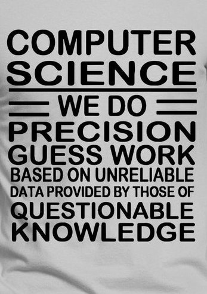

Overblik

Hvad laver en datamatiker?
En datamatiker beskæftiger sig med emner som programmering, systemudvikling, databaser, e-handel, it-sikkerhed og it-udvikling, blot for at nævne nogle ting. Det er meget forskellige, hvad en datamatiker laver, samt hvad de har specialiseret sig i. Mange datamatikere vælger at blive udviklere i en eller anden form.